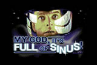
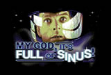
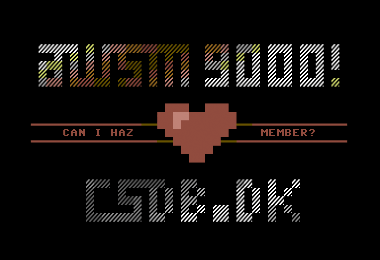

spritemate is a browser based sprite editor for the Commodore 64. Create singe- and multicolor sprites, draw with the C64 palette, use sprite overlays, import from SpritePad and save your work in various formats including assembly source! All data is processed on front end side, no back end is involved and you can use this tool offline. It's fun! It's free!
Documentation is available on Github: spritemate documentation


Visit the mysterious Ghost Town, a place full of unexpected dangers and hidden treasures! Ghost Town JS is a JavaScript remake of the fantastic game written by Udo Gertz and released in 1985 for the Commodore C16, C116 & Plus/4. This remake is pixel perfect as it reads in the binary screen data from the original game. For more information and additional links, scroll down the page after launching the game. Have fun!


 



awsm's biggest production yet, featuring 10 different screens with code & art made exclusively for this demo. Works best (and probably only) in a Chrome browser. If you can't get it to run on your machine, you can watch the video on youtube. The demo is listed on pouët.net.
Launch demo
youtube

I released a greatly extended version of the game Ghost Town for the Plus/4 and, for the first time, Ghost Town for the C64. Please visit the dedicated site for the download.
www.kingsoft.deA fake release for the Deadline 2019 demo party under the handle Aal Schlagerfeld in coorporation with dalezy. I wasn't even drunk when I made this. Won 3rd place.
csdb.dk youtubePETSCII logo. I had no motive in mind when I started and just went with the flow.
csdb.dkReleased at BCC#13 in February 2019. It won the graphics compo. I always wanted to create a dark "Alice in Wonderland" image and I'm quite happy how it turned out.
C64 csdb.dk C128 versionReleased at BCC#13 in February 2019. It scored 3rd place. I contributed many multicolor gfx and coded the title screen and the arrow part.
csdb.dk youtubeI was curious if I could convert my multicolor image "Moon" to PETSCII. It ended up on Mars. The Plus/4 version scored 3rd place at Deadline 2018.
C16 & Plus/4 C64 csdb.dkI got a new phone with a touchpen and created this C64 multicolor image. Haven't done any drawing in a while but I had fun with it.
csdb.dkWhat if HP Baxxter of SCOOTER was a cracker? We'll probably never know, but this cracktro may be the closest thing...
csdb.dk youtube"Trafolta" by Mayday! We scored first place at the BCC#11 party 2017! Just shortly after the massive X demo we went into battle again, wounded but alive and hungry :D
csdb.dk youtubeMy pure PETSCII entry to the graphics compo at BCC#11. It scored 2nd place. Like many of my releases, this started out as something completely different. There is a C64 and a C16 version.
C64 csdb.dk C16 PRG
"Fallen Stars" by Mayday! We scored 9th place at the X party 2016! Click here to see a composition of the PETSCII animation and watch the demo on youtube.
csdb.dk youtubeA Zelda-style room created in pure PETSCII. I wanted to turn this into a small game, but lost pace and motivation along the way. The usual. I'm quite pleased with how it turned out, however, so I released this screen at least.
csdb.dkMayday released a great Jewel Crack of Nemesis & Gradius. I fixed and updated the original title screen, which was converted from the ZX Spectrum game. My first contribution to a crack and my first hires screen.
csdb.dkScored 4th place at BCC#10 2016. Started a long time ago, but only finished in a rush just before the compo started. Some rasters in the border and top and border sprites to extend the lady to full beauty.
csdb.dk
Released at BCC#10 on Feb 27, 2016, this screen scored 3rd in the graphics compo. I made it almost a year ago and never finished it to the level I intended.
csdb.dkJust a small PETSCII screen that plays around with the fantastic tune from Eddie. I decided to release it as is, knowing that it would never become 100% as I wanted it to be. Some raster bars and sprites involved.
csdb.dk youtubeA conversion of the original screen from the Full Of Sinus demo. The picture got more colorful to compensate for the lack of a DYCP scroller and the zoom effect. I fought hard to get the raster bars stable.
csdb.dk
My second PETSCII attempt. If you look long enough, you might notice that it resembles a postcard, with mountains in the back, the beach in the front and the logo being the hotels.
csdb.dkMy first PETSCII logo. The main screen area is pure charset, but I opened the top and bottom borders and put some sprites in it to extend the image.
csdb.dk
My first conversion of a screen from the Full Of Sinus demo. Minor tweaks on the image and a color wash effect on the logo and scroller to compensate for the lack of a custom font.
csdb.dk My second C64 program, serving as request to get accepted as a member on csdb.dk. You can see that it is still pretty much the same code that I used for the first demo.
csdb.dk
My first demo on the C64 after about 25 years. Nothing special by any standards, but very important for me to get back into demo development.
No csdb.dk entryRasterbars, color cycling effects, a starfield, a big scroller and a tune from Forbidden Forest: the Yeti Factories cracktro is a powerful demonstration of the 64's capabilities.
Yeti Factories Cracktro
This cracktro left me speechless when I first saw it. It makes you think the Commodore 64 has far more than 16 colors. Add the masterful music and you have a piece of art that still impresses me today.
Papillons CracktroWhat an epic cracktro by Hotline! With big moving logo and scroller, parallax effects and a hypnotic sound effect this one was quite tricky to convert.
Hotline Cracktro
A very quick conversion of a simple cracktro that I mostly did because of the cool music.
T.E.C. Industries CracktroEven after 30 years I remember how I adored the color cycling effect in the logo and I needed to do a remake to fully understand it. However, this intro with the colored logo usually had no music.
Dynamic Duo Cracktro
A simple but great package from IKARI with a cool logo, nice color scrollers and an uplifting tune.
Ikari CracktroMy first attempt at writing my own fake cracktro. I like the scroller, but the starfield isn't looking as it should on a Commodore 64.
awsm Cracktro
Another legendary intro. Technically not too impressive, but very fitting with this masterful SID tune.
Fairlight Cracktro
Probably the most iconic cracktro of the Commodore 64. Countless great productions coming from the US started with the eagle. Logically, this had to be my first JS conversion.
Eaglesoft CracktroThe memory map of all available registers and their functionality is a mandatory reference for developing on the Commodore 64. This page should look alright on mobile devices too.
www.awsm.de/mem64/
RetroPie is a great emulation machine based on the Raspberry Pi. It has full VICE support, but was missing labels for the Commodore VIC20, C16 and C128. So I made some. Feel free to use them.
Download ZIP fileI wanted to have a nice shirt with the MOS TECHNOLOGY logo on it and couldn't find any high resolution or vector versions of it, so I made one. Feel free to use it. File contains PNG and SVG versions.
Download ZIP fileI needed a 1084S image for my demo and couldn't find any on the web, so I made one. It is completely vector based and you can download and use it for free. Go ahead!
Download SVG file
Here's something for the Atari fans: vector versions of the famous Atari SM124 and SC1224 monitors. The zip file contains a vector file, a Photoshop file with layers and png images to integrate with your browser demo.
Download ZIP file
For my Ghost Town remake I decided to create a nice retro looking tv and I'm quite pleased how it turned out. You can grab the zip file containing vector and png files right here.
Download ZIP file{kind=link}